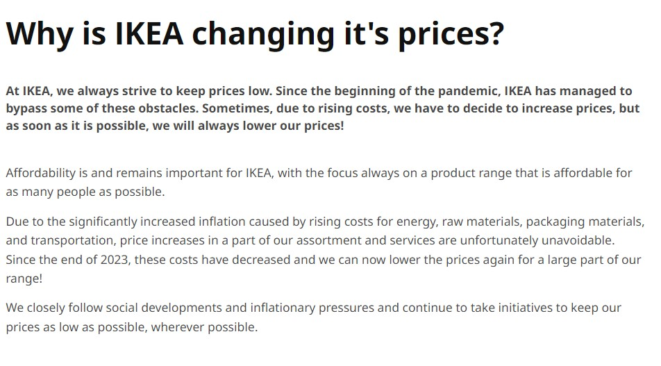

Demand, Supply, Economy
Demand
One major important aspect of Ikeas demand is the competitive low prices . These low prices are the result of Ikeas well-tuned business model (Rosenfeld, 2022). For example, factors such as how much Ikea produces of one product in bulk affects the price that consumers pay for the product (Rosenfeld, 2022). To keep this low, Ikea produces its product in bulk and buys the materials for production in bulk, thus cutting costs within the first steps of production (Rosenfeld, 2022). Furthermore, something as simple as Ikeas packaging helps cut costs as the flat packaging that products ship in allows for money to be saved in shipping and warehouse storage costs (Rosenfeld, 2022). This packaging also correlates with the environmental policies discussed below.
One key feature of Ikea that helps drive its demand is its policies that incorporate a more circular economic approach as well as basic environmental practices such as minimal amounts of extra space in packages and recycled particle board in their products (Magyar, 2022). Another such policy is its recycling and refurbishment of old furniture products from Ikea, for example Ikea offers a program where they will buy back old products and sell them to new consumers at a discounted rate (Our circular agenda – ikea global). This environmentally friendly business practice caters to consumers looking to make smarter choices regarding the environment while still keeping prices low.
Supply
Ikea's supply is driven by multiple different factors, the most notable and evident being new Technologies that can manufacture and process products more efficiently as well as human resources available for the transport and manufacturing of products.
A recent example of new technologies being implemented would be in Ikea’s components facilities. Previously inventory was managed via workers using forklifts, this method limited productivity (Mecalux). Ikea saw this and implemented technologies that managed inventory using an automated storage and retrieval system(Mecalux). This system helps increase productivity of the businesses’ supply operations by working 24/7 and limiting the possible errors that could occur. The new system is just one of the multiple ways Ikea implements new technologies to keep up with demand.
Ikea's supply is also greatly influenced by problems that arise with sourcing from suppliers on the global market (Ringstrom, 2021). Epidemics, tariffs, and other such limiting factors can cause a multitude of supply chain issues. One such example is that of what happened during the Covid-19 epidemic. During this time suppliers in China had issues transporting product through ports which resulted in Ikea running into supply chain issues that had to be resolved by finding alternative transport methods (Ringstrom, 2021).
Type of Economy
Ikea operates in a multitude of economies around the world with its primary economies being all of North America, most of Europe, and locations in China (Wikipedia, 2024). Although Ikea operates in a variety of locations around the world through the use of franchising (Wikipedia, 2024), their headquarters are currently located in the Netherlands which is defined as a highly regulated mixed economy (Britannica). One possible reason for Ikeas headquarters being in the Netherlands is that through the use of a company like INGKA Holdings, and their association with a Dutch non-profit, Ikea can pay less taxes (McComb, 2017). For this reason last year Ikea avoided paying up to 33 times less in taxes than other competitors which resulted in improved profits (McComb, 2017).
IKEA forced to cut 5,000 jobs worldwide due to economic crisis
IKEA Chief Executive Anders Dahlvig said in an interview with Swedish daily Dagens Industri. “The group's trend of rapid growth had been broken as the worst recession in living memory hit markets across the world” (Jessop, 2009). "We have never had to implement such massive job cuts before.... But it is completely necessary to adapt our costs and our capacity to demand, which is weaker than we expected" (Jessop, 2009). "The sharp downturn of the economy has really surprised us. This downturn is very closely linked to the housing sector and is therefore even worse for our industry. Home decorating has plunged much more than the retail sector in general" (Jessop, 2009).
IKEA sees record sales in spite of downturn-paper
From the Anders Dahlvig statements, it can be determined that the IKEA Group has been greatly affected by the financial crisis. IKEA group kept up enlarge with new stores, it had also cut approximately 5,000 staff due to the frailer market demand (Jessop, 2009). With this management strategy, the IKEA Group maintained steadily increasing sales from the 2008 financial crisis until the coronavirus crisis.
Why is IKEA changing it's prices?
IKEA's website clearly explains the price changes. The explanations are almost the same in all countries, but the Dutch site clearly explains the reasons for the price increase in 2022 due to inflation to the price decrease in 2023.
IKEA's business strategy includes flexible pricing. For example, in the US the price of IKEA's BILLY bookshelf was $69 in 2016, dropped to $59 in 2019, rose to $89 in 2022, and is back to $69 now (Merriman, 2024). IKEA's product website displays the latest price changes for individual products.
While the strategy of price revision
In the UAE, prices in the furniture sector increased in line with the national inflation rate. In this situation, anti-inflation products were born. Despite price increases across the industry and production chain, a selection of IKEA's 80 most popular items have remained priced 'as is'. The advertising initiative was featured in the economic segments of prominent news platforms, various social media channels, stationary and electronic billboards throughout the UAE and Qatar, as well as on promotional displays within IKEA stores (INGO The Agency, n.d.). This is a very effective media strategy during inflation.